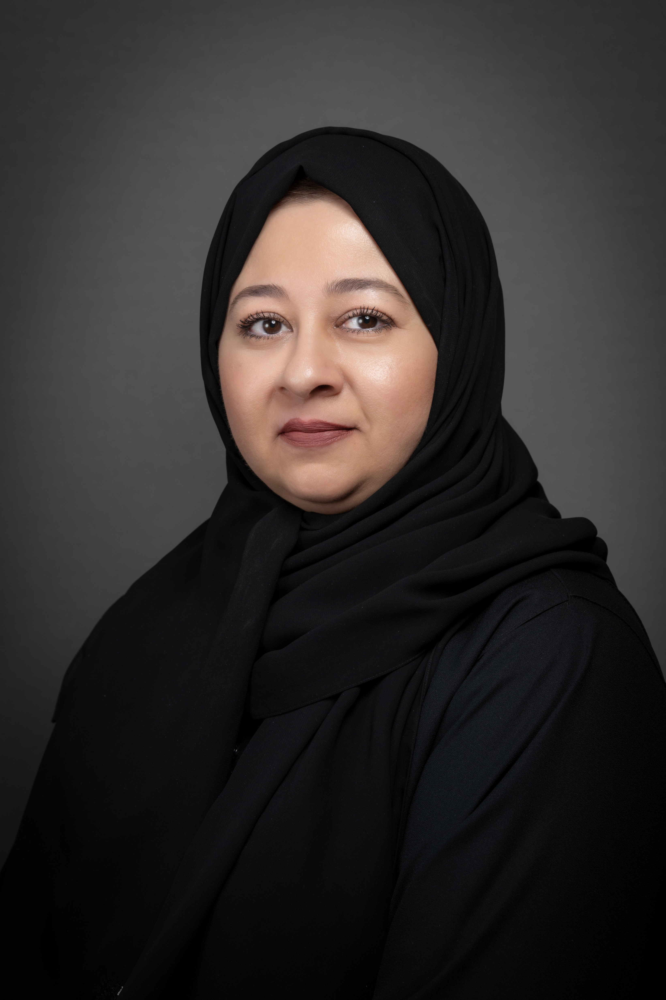
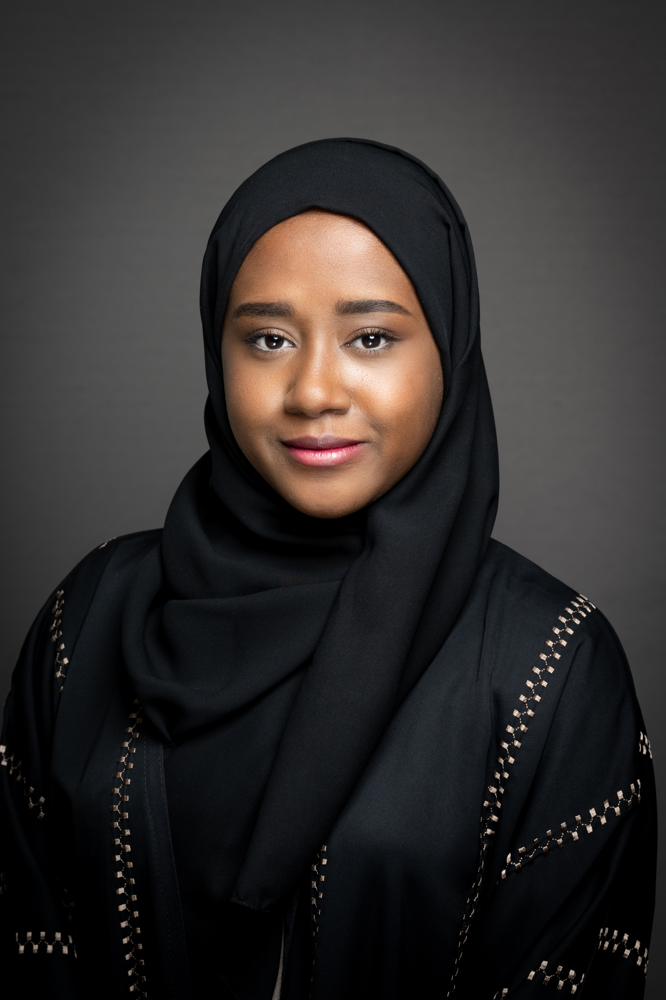
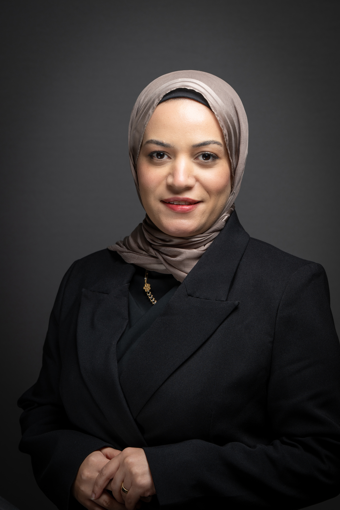

1أربعة توجهات تصميم حديثة (2026) مطبّقة على لوحتك
نفس المحتوى الحقيقي لرئيس القطاع، بأربعة أساليب بصرية سائدة حالياً على Dribbble وBehance وApple/Linear. اختر ما يعجبك (مثلاً «طبّق 1b على كل المنصة») أو امزج بينها.
1a بنتو جريد — بطاقات معيارية متفاوتة الحجم (أسلوب Apple / Linear)

فوزية الطاير
رئيس قطاع الخدمات المركزية
3 يوليو 2026
يحتاج قرارك الآن
لديك 2 مشاريع و2 اجتماعات بانتظار اعتمادك
عاجل · 3
اليوم · 2
5
مهام متأخرة
11
إجمالي المشاريع
أولوية قصوى — مشروع متأخر
إعادة هيكلة وحدات التعلّم المستمر
سماح أبو شرخ · استحقاق 10 يوليو
1b مركز قيادة داكن — Dark mode ناضج بلمسات ذهبية/نعناعية
فوزية الطاير
رئيس قطاع الخدمات المركزية
3 يوليو 2026
أولويات تحتاج تدخلك
2 مشاريع و2 اجتماعات بانتظار قرارك هذا الأسبوع
5
يحتاج قرارك
5
متأخر
2
اجتماعات
اجتماع بانتظار الاعتمادعاجل
الهيكل التنظيمي والشواغر المتاحة
6 يوليو 2026 · 10:00 ص · بناءً على طلب محمد الفرهان
اعتماد
اقتراح موعد
1c زجاجي راقٍ — طبقات شفافة فوق تدرّج شفقي (Glassmorphism)
فوزية الطاير
رئيس قطاع الخدمات المركزية
أولويات تحتاج تدخلك
2 مشاريع و2 اجتماعات بانتظار اعتمادك
5
مهام متأخرة
11
إجمالي المشاريع
آخر التحديثات من الفريق

سماح أبو شرخ

فاطمة الرشيدي

هاجر هلول
1d تحريري بسيط — تايبوغرافي كبير ومساحات بيضاء واسعة
لوحة رئيس القطاع
مساء الخير، فوزية
أربعة قرارات
تنتظر توقيعك اليوم.
تنتظر توقيعك اليوم.
01اليوم
الهيكل التنظيمي والشواغر
اجتماع · عاجل
0210 يوليو
إعادة هيكلة وحدات التعلّم
مشروع متأخر · سماح أبو شرخ
03هذا الأسبوع
طلب ترشيح ممثلين للجنة التميّز
مستند · فاطمة الرشيدي
5
متأخر
11
مشاريع
8
صادر ووارد
جرّب: «طبّق 1a على كل المنصة» · «أريد 1b لكن بخلفية أفتح» · «امزج بنتو 1a مع تايبوغرافي 1d» · «أرني توجهات إضافية»